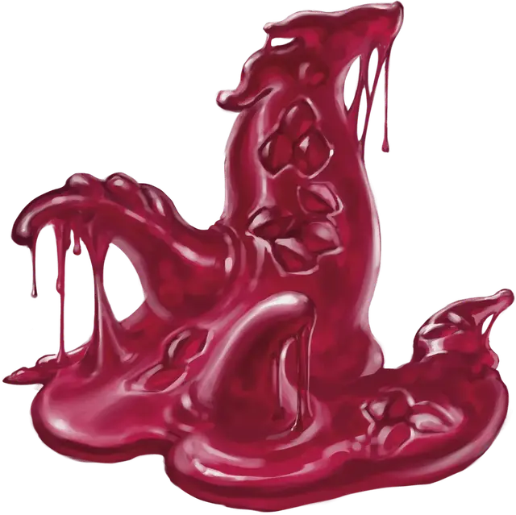

Слизь крови дракона
Dragonblood Ooze
Большая Слизь, без мировоззрения

Класс Доспеха 14 (природный доспех)
Хиты 68 (8к10 + 24)
Скорость 20 футов, лазая 20 футов
| мод | спас | ||
|---|---|---|---|
| СИЛ | 18 | +4 | +4 |
| ЛОВ | 6 | −2 | −2 |
| ТЕЛ | 17 | +3 | +3 |
| мод | спас | ||
|---|---|---|---|
| ИНТ | 2 | −4 | −4 |
| МДР | 12 | +1 | +1 |
| ХАР | 10 | +0 | +0 |
Навыки Восприятие +4, Скрытность +4
Сопротивление урону кислота, огонь, холод, электричество, яд
Иммунитет к состояниям глухота, захват, испуг, истощение, опутанность, ослепление, очарование, сбивание с ног
Чувства слепое зрение 120 футов (слеп за пределами этого радиуса), пассивное Восприятие 14
Языки Драконий
Опасность 5 (1800 опыта)
Бонус мастерства +3
Особенности
Язык. Понимает Драконий и языки своего создателя, но не говорит.
Аморфный. Слизь может перемещаться сквозь пространство шириной в 1 дюйм без протискивания.
Паучье лазанье. Слизь может лазать по сложным поверхностям, включая потолки, без совершения проверок характеристик.
Действия
Мультиатака. Слизь совершает две атаки Ложноножками. Слизь может заменить одну атаку Ложноножкой своим Дыханием слизью, если таковое имеется.
Ложноножка. Рукопашная атака оружием: +7 к попаданию, досягаемость 10 футов, одна цель. Попадание: 9 (1к10 + 4) дробящего урона плюс 14 (4к6) урона кислотой. Если целью является существо Большого размера или меньше, оно захвачено (Сл высвобождения 15). Пока захват не окончится, цель получает 7 (2к6) урона кислотой в начале каждого своего хода.
Дыхание слизью (перезарядка 6). Слизь разбрызгивает свою студенистую массу в 30-футовом конусе. Все существа в этой области должны совершить спасбросок Ловкости Сл 14. При провале существо получает 22 (4к10) урона кислотой и подтягивается на 30 фт. прямо к слизи. При успехе существо получает половину этого урона и не подтягивается.
Описание
Магически мыслящие ремесленники уже давно превращают части тел драконов в магические предметы, превращая драконью чешую в броню и выковывая оружие из когтей и зубов. Алхимики нашли полезное применение драконьей крови, но опрометчивые эксперименты также привели к появлению Слизи крови дракона.
Свернувшаяся кровь дракона, наделенная подвижностью и голодом, пытается принять драконью форму. Она не может долго сохранять четкую форму и вскоре превращается в бесформенную кучу. Точно так же она пытается проявить оружие дыхания, но ей удается только извергнуть часть своего собственного тела, которую она затем втягивает обратно.